Hi, I am Laura Guerrero
An experience creator
I'm a creative and versatile professional from Spain with a background in graphic and web design. After studying Interactive Graphics and working in the design field for several years in Barcelona, I felt the pull to explore the world and grow on a personal level. That journey took me from the mountains of Northern California through Latin America, where I volunteered in hostels, worked on organic farms, and sailed on private boats—always finding ways to bring my love for design and photography along for the ride.
These experiences deepened my love for travel, culture, and human connection.
Eventually, I made California my home and lived in the mountains for a few years. After embracing a multifaceted lifestyle, I'm now based in San Diego, refreshing my skills in web development and UX/UI design as I get ready to return to the tech world with a fresh perspective and renewed enthusiasm.
Passionate, adaptable, and curious, I'm excited to find opportunities where I can blend my creative background with my love for travel, technology, and continuous learning.
WHY I AM TAKING THIS COURSE
-
 To refresh my foundational web development skills after
spending time away from the tech field.
To refresh my foundational web development skills after
spending time away from the tech field.
-
 To stay up-to-date with current web standards and best
practices in coding, as well as more advanced
technologies.
To stay up-to-date with current web standards and best
practices in coding, as well as more advanced
technologies.
-
 To strengthen my front-end development knowledge,
especially as I transition back into the tech
industry.
To strengthen my front-end development knowledge,
especially as I transition back into the tech
industry.
-  To gain confidence in my coding abilities, especially when integrating design and functionality.
-
 To boost my UX/UI skills and open up more roles that mix
design with coding.
To boost my UX/UI skills and open up more roles that mix
design with coding.
-
 Because I enjoy learning and building things—HTML/CSS is
a creative tool that lets me bring ideas to life on the
web.
Because I enjoy learning and building things—HTML/CSS is
a creative tool that lets me bring ideas to life on the
web.
My experience
My experience in web development started alongside my graphic design studies, while I was also working in design and web for small companies.
I studied Graphic Design and Interactive Graphics in Barcelona several years ago. After graduating, I worked primarily as a graphic designer, but I was also deeply involved in web design projects, especially focusing on layout using HTML and CSS.
After spending some years living a more multifaceted lifestyle, I decided to reconnect with the tech world. So, last year, I joined a Front-End Development BootCamp to refresh my skills. During the course, I revisited HTML and CSS, got more comfortable with frameworks like Tailwind and Bootstrap—which I had used before but hadn't fully mastered—and began learning the basics of JavaScript. I also got my first look at Vue.js.
Now, I'm continuing to grow as a front-end developer, combining my creative background with up-to-date coding skills—and really enjoying the process.

MY HOBBIES
The thing I enjoy most is TRAVEL! It has taught me so much about life and people. I also love sharing my life with my dog—a 5-year-old German Shepherd named Ohana. Ohana means family, and she truly is my family here since I moved from Spain. I enjoy doing anything outdoors, and I also love dancing and electronic music.